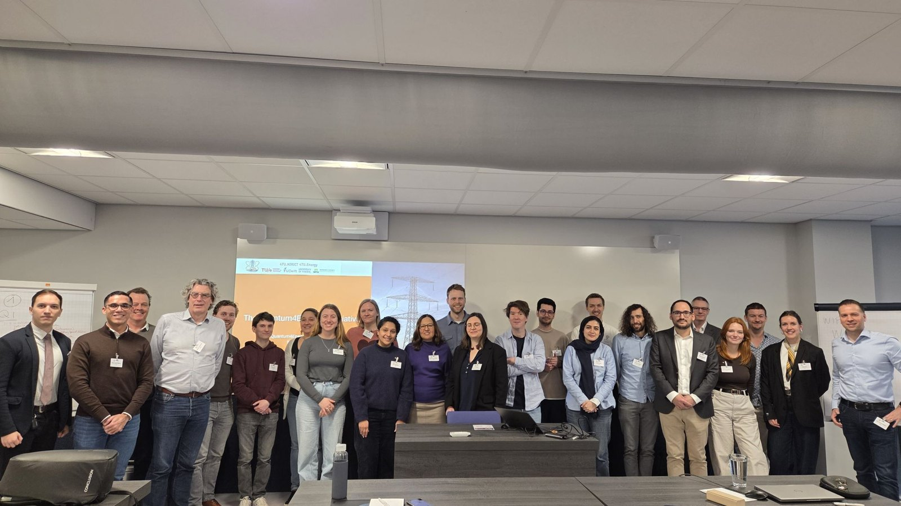

Expert Workshop: Quantum technologies for future power and energy systems
The Quantum4EnergyNL initiative is organizing a workshop on quantum technologies for future power and energy systems. Researchers and professionals from academia, industry, and policy are warmly invited to explore opportunities, challenges, and future collaboration.
The workshop brings together experts approaching power and energy systems from both the ICT and electrical-engineering domains, alongside quantum-technology and algorithm researchers interested in power and energy applications of their work.
Workshop objectives
Connect
researchers and practitioners interested in quantum technologies for power and energy systems.
Map
relevant past and ongoing research projects across the Netherlands.
Identify
areas in the energy transition where quantum computing and technologies can be impactful.
Explore
opportunities and challenges for programmatic research.
The workshop will provide input for a public report. An online follow-up workshop will take place in June 2026.
Programme
| Time | Session |
|---|---|
| 9:15 – 9:45 | Welcome with coffee |
| 9:45 – 10:00 | Introduction to the Quantum4EnergyNL initiativeN. Paterakis (TU/e) |
| 10:00 – 11:00 | Interactive session: connecting the community & mapping quantum research in the NLM. Möller (TUD) |
| 11:00 – 12:15 | Breakout Session I: identifying key challenges & high-impact use casesP. Vergara (TUD) |
| 12:15 – 13:00 | Lunch break |
| 13:00 – 13:30 | Presentations by SURF and QuantumDeltaNLA. Torres Knoop (SURF), M. Matters (TUD / QuTech & QuantumDeltaNL) |
| 13:30 – 14:00 | Pitch session |
| 14:00 – 14:30 | Quantum technologies for power systems: global research overview & sustainable computingN. Paterakis (TU/e), J. Sallou (WUR) |
| 14:30 – 14:45 | Coffee break |
| 14:45 – 16:00 | Breakout Session II: understanding adoption barriers & identifying strategic partnershipsJ. Sallou (WUR) |
| 16:00 – 16:30 | Next steps & closing discussion |
